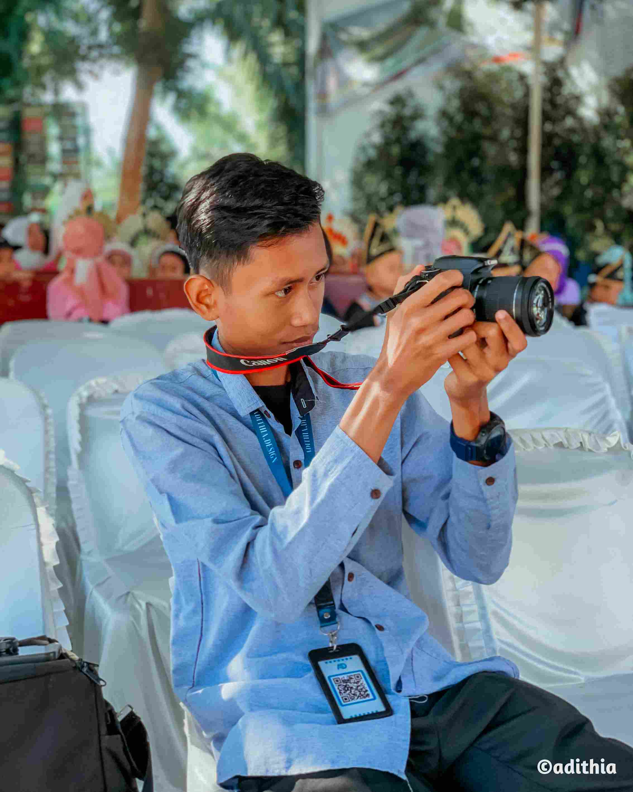

Tentang Saya
Kenali lebih dekat siapa saya, perjalanan karir, dan visi saya dalam dunia kreatif & teknologi.

Halo! Saya Alif Adithia 👋
Saya adalah seorang IT Support, Fotografer, dan Desainer Grafis asal Medan, Sumatera Utara dengan pengalaman lebih dari 4 tahun di industri kreatif dan teknologi. Saya Melalui usaha freelance yang bernama Adithia Solution, saya berfokus menghadirkan solusi visual dan digital yang berdampak nyata bagi klien.
Di bidang IT, saya menguasai troubleshooting komputer, pengelolaan jaringan, serta pembuatan website. Di sisi desain, saya berpengalaman dalam menciptakan identitas visual, poster, dan konten media sosial menggunakan Photoshop, Canva, Affinity, dan Lightroom.
Selain itu, saya juga memiliki pengalaman praktis di bidang percetakan, mulai dari proses penyiapan file hingga produksi, untuk memastikan setiap desain dieksekusi menjadi materi cetak profesional yang berkualitas tinggi.Sebagai Fotografer juga, saya mengerjakan foto produk, food photography, dan dokumentasi event. Saya percaya bahwa visual yang kuat adalah kunci komunikasi yang efektif antara sebuah brand dan audiensnya.
Sebagai lulusan SMKs PAB 10 Patumbak jurusan Teknik Komputer dan Jaringan (TKJ), saya memiliki fondasi teknis yang kuat. Saat ini, saya tengah melanjutkan pendidikan S1 Teknik Informatika di Universitas Budi Darma sembari aktif menjalankan berbagai proyek freelance. Pengalaman magang di SAE Digital Akademi juga turut membentuk profesionalisme saya dalam menghadapi lingkungan industri kreatif dan teknologi yang nyata.